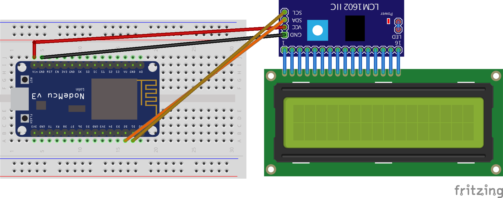
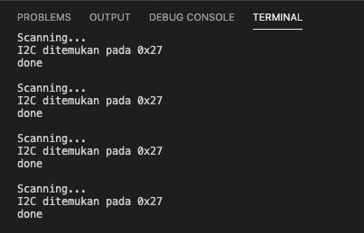
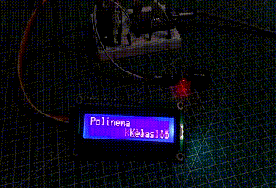
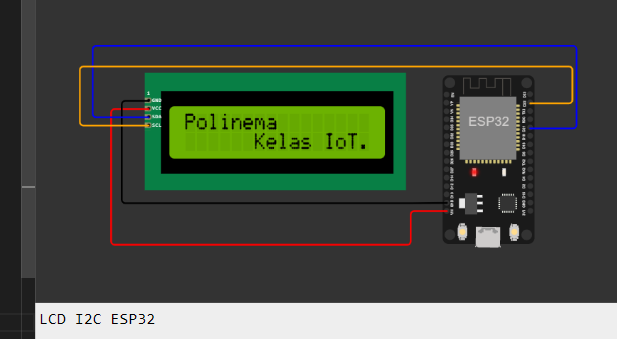
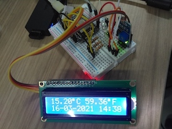

LCD
Topik Bahasan
Implementasi LCD I2C
Kemampuan Akhir yang Direncanakan
- Mahasiswa mampu menggunakan LCD I2C untuk menampilkan data
- Mahasiswa mampu untuk mencari alamat I2C pada MCU
- Mahasiswa mampu menggunakan library yang digunakan untuk kebutuhan LCD I2C
- Mahasiswa mamapu mengkalibrasi LCD I2C
Teori Singkat
Berbagai jenis LCD bergantung dengan banyaknya karakter yang dapat ditampilkan, misalkan 16x2 ataupun 20x4. 16x2 artinya LCD tersebut mampu menampilkan sebanyak 32 karakter, dengan jumlah barisnya 2 dan jumlah kolomnya adalah 16. LCD merupakan sebuah jenis dari aktuator dan biasanya digunakan sebagai output atau tampilan dari sebuah nilai/data yang telah diolah dari sensor.
Biasanya untuk memudahkan dalam wiring kita membutuhkan modul i2c, fungsi modul tersebut agar menyederhanakan jumlah kabel yang digunakan. Berikut ini adalah tampilan fritzing yang sapat dapat diterapkan.

Versi fritzing dapat diunduh di sini
Dari gambar di atas, diperjelas pada tabel di bawah ini
| ESP8266 Amica | LCD I2C |
|---|---|
| Vin | VCC |
| GND | GND |
| D1 | SCL |
| D2 | SDA |
Praktikum 1 - Mencari alamat I2C
Untuk dapat menggunakan LCD yang menggunakan I2C, sebelumnya harus mencari terlebih dahulu lokasi dari I2C tersebut. I2C
defaultnya terdapat di 0x27, akan tetapi hal tersebut bisa berbeda bergantung dari manufacture atau vendor. Buatlah
kode di bawah ini untuk mendapatkan alamat I2C pada LCD.
Adapun langkah-langkahnya adalah sebagai berikut;
- Buat project menggunakan visual studio code dengan PlatformIO dengan nama
vs-i2c-address - Tentukan board yang digunakan, dengan mengetik
esp8266kemudian pilih yangEspressif ESP8266 EFSP-12E - Untuk lokasi penyimpanan project disesuaikan dengan kebutuhan Anda.
- Tunggu beberapa saat sampai dibuat struktur project oleh Visual Studio Code. Kemudian tambahkankan beberapa
konfigurasi pada file
platform.ini. Tambahkan kodemonitor_speed = 115200untuk mengkonfigurasi serial console terkait baudrate. Tambahkan potongan kode pada fungsi
setup()seperti berikut ini#include <Wire.h> void setup() { Wire.begin(); Serial.begin(115200); Serial.println("\nI2C Scanner"); }- Pada fungsi
loop()tambahkan juga kode seperti berikutbyte error, address; int nDevices; Serial.println("Scanning..."); nDevices = 0; for(address = 1; address < 127; address++ ) { Wire.beginTransmission(address); error = Wire.endTransmission(); if (error == 0) { Serial.print("I2C ditemukan pada 0x"); if (address<16) { Serial.print("0"); } Serial.println(address,HEX); nDevices++; } else if (error==4) { Serial.print("Unknow error at address 0x"); if (address<16) { Serial.print("0"); } Serial.println(address,HEX); } } if (nDevices == 0) { Serial.println("No I2C devices found\n"); } else { Serial.println("done\n"); } delay(3000);
Upload kode di atas, kemudian amati hasilnya pada serial monitor.
Verifikasi Hasil Percobaan
Hasil dari percobaan di atas seharusnya dapat menghasilkan keluaran seperti ditunjukkan pada gambar di bawah ini

Keluaran dari kode di atas akan kita gunakan untuk menginisialisasi LCD yang akan kita gunakan pada praktikum selanjutnya. Setiap nilai alamat I2C bisa berbeda dengan yang lain, tergantung dari pabrik pembuatnya.
Praktikum 2 - Menampilkan data pada LCD
Pada praktikum ini kita akan mencoba menggunakan LCD untuk menampilkan sebuah text, hasil praktikum pertama akan kita gunakan pada praktikum ini. Silakan ikuti langkah-langkah berikut ini
- Buat project dengan nama
vs-i2c-lcdserta untuk konfigurasi board, penyimpanan project, serta file platform.ini disamakan dengan project sebelumnya pada praktikum pertama. - Tambahkan library
LiquidCrystal_I2Cpada project Anda, untuk menambahkan library tersebut bisa melaluiplatform.iniatau menggunakan wizard/sistem menu pada PlatformIO seperti yang telah diajarkan pada praktikum yang sebelumnya. Tambahkan 2 baris kode sebelum fungsi
setup()agar kita bisa memanfaatkan library yang telah kita tambahkan seperti di bawah ini#include <LiquidCrystal_I2C.h> LiquidCrystal_I2C lcd(0x27, 16, 2);- Tambahkan kode pada fungsi
setup()untuk memanggil berapa fungsi sebagai berikutlcd.init(); // initialize the lcd lcd.backlight(); lcd.clear(); lcd.home(); - Buatlah sebuah fungsi
scroolText(...), fungsi ini digunakan untuk melakukan scrolling text yang terdapat pada LCD agar lebih menarik.void scrollText(int row, String message, int delayTime, int lcdColumns) { for (int i = 0; i < lcdColumns; i++) { message = " " + message; } message = message + " "; for (int pos = 0; pos < message.length(); pos++) { lcd.setCursor(0, row); lcd.print(message.substring(pos, pos + lcdColumns)); delay(delayTime); } } - Tambahkan beberapa baris perintah pada fungsi
loop(), seperti dicontohkan pada baris berikut inilcd.home(); lcd.print("Polinema"); scrollText(1, "Kelas IoT.", 250, 16); - Upload kode di atas selanjutnya perhatikan tampilan LCD Anda masing-masing.
Pada kode di atas terdapat baris perintah LiquidCrystal_I2C lcd(0x27, 16, 2);, berfungsi untuk menginisialisasi lcd
dengan alamat i2c terdapat di 0x27 menggunakan LCD 16x2.
Verifikasi Hasil Percobaan
Hasil dari percobaan di atas seharusnya dapat menghasilkan keluaran seperti ditunjukkan pada gambar di bawah ini

Menampilkan data pada LCD - WOKWI
Untuk dapat menggunakan wokwi, silakan disesuaikan untuk lokasi dari SDA dan SCL. Silakan menghubungkan SDA
pada pin
21, sedangkan SCL pada pin 22. Jangan lupa menambahkan library LiquidCrystal I2C. Selanjutnya jika dijalankan
akan menampilkan gambar seperti pada gambar berikut.

Pertanyaan
- Jelaskan fungsi dari pemanggilan method
lcd.backlight()? - Bagimana caranya mengganti tingkat intensitas kecerahan dari LCD Anda?
- Silakan modifikasi data yang ditampilkan pada LCD Anda?
Video Pendukung
Tugas
Buatlah sebuah aplikasi yang sederhana menggunakan DHT11, LED RGB, dan LCD. Skenarionya adalah sebagai berikut
- Buatlah ketiga komponen tersebut di dalam satu rangkaian menggunakan fritzing.
- Tampilkan suhu dalam bentuk Fahrenheit dan Celcius, suhu yang ditampilkan adalah suhu di ruangan sekitar Anda.
- Ketika suhu normal LED berwarna biru akan berkedip-kedip, ketika suhu dingin LED berwarna hijau akan berkedip, dan LED berwarna merah akan berkedip ketika suhu tergolong tinggi.
- Tampilkan waktu saat ini juga pada LCD.
- Silakan hasilnya diupload ke google drive ataupun youtube, linknya sertakan dalam laporan Anda.
Output yang diharapkan adalah sebagai berikut
